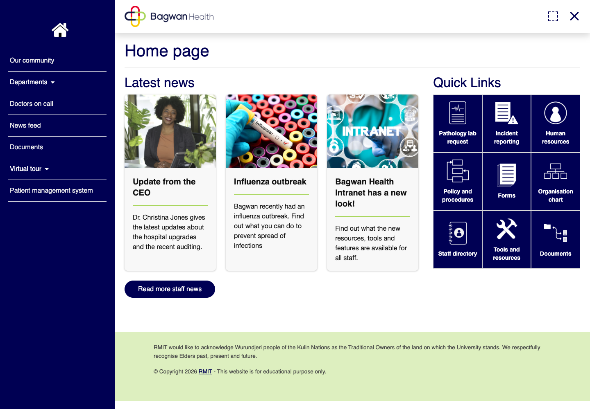
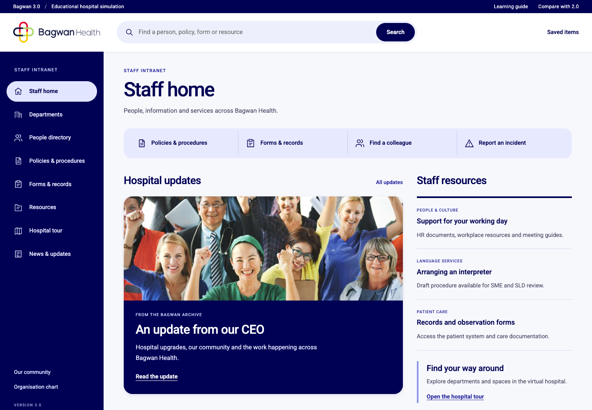

FOR ANDREW · SENIOR LEARNING DESIGNER · 20 NOVEMBER 2026
Bagwan 3.0 What we changed
A clearer hospital staff intranet, with learning support kept separate and new content made visible for review.
Bagwan 3.0 is a parallel review version. It brings the existing workplace resources into a more coherent intranet, restores missing material and removes interactions that made reference information harder to use. The original site remains available so you can compare both experiences.
Download the five-page document for Andrew (PDF)
The main changes
- Bagwan stays blue. The redesign retains the hospital identity, using Material-inspired navigation, clear selection states, locally hosted Roboto and deliberate visual hierarchy.
- People can start with the task. Policies, forms, people, departments, resources and the hospital tour have direct entry points.
- Search covers the intranet. People can search source pages, names, roles, documents and videos, then filter within a section.
- Open the right document. Filter by category and file type, sort by title or last update, and preview a document before downloading the original. Dates come from the source files. The incident response policy needs an ownership check. Open Documents & templates.
- Follow a reporting line. A staff profile shows the recorded manager and direct reports. The archive supplies five nursing unit charts and four liaison staff. Review the unresolved reporting lines and appointments.
- The recovered videos are back. Eleven meeting videos and the Closing the Gap video join the twelve original embeds.
- Reference information is visible. All five values can be read without flipping cards. PPE and waste references belong in the intranet.
- Learning guidance is separate. The guide contains suggested workplace tasks, reflection and optional practice, without turning the staff home into a course dashboard.
Before and after


What happened to H5P
The three packages are replaced in 3.0 by native HTML exercises in the learning guide. PPE practice now asks about decisions and risk assessment. Waste practice uses explicit examples and feedback. The interpreter task uses the current directory and asks learners to record their reasoning; it does not reveal a historical person’s name as the correct answer.
The waste answer key exposed a content problem: unspecified expired medication was treated as cytotoxic. The revised draft distinguishes a known cytotoxic residue from a medicine that needs more information. The SME must review the examples and answer key.
What content was recovered or created
Complete code of conduct and privacy text was restored from the supplied Word documents. Ten new or adapted drafts cover medication safety, handover, interpreter booking, nursing structure, liaison services, laboratory references and the three optional activities. Every draft has a reason, status and named reviewer role in the register.
No draft is presented as an approved clinical procedure. Source policies retain a currency-review notice. Missing names, contact details, hospital geography and evacuation routes have not been invented.
What the review found
All 103 published GitHub pages loaded. Three of the 90 WordPress source URLs returned 404. Nine external URLs were broken on both versions of the source content; verified replacements are included in 3.0 and the local repair set. Ten departmental charts overflowed on phones and have been repaired locally.
The existing keyboard and clinical form journeys passed 93 checks. The first blue 3.0 review build passed 55 journey checks, and all 103 content views received a layout and automated accessibility pass. These checks support a working review build; they do not establish clinical approval, full accessibility conformance or complete video playback.
What we deliberately kept
The supplied patient records, working clinical calculations, draft saving, print/download behaviour, branching interpreting scenario and hospital tour remain available. The 3.0 interface integrates those working functions while the core intranet navigation and content views have been redesigned. Forms still create local training drafts rather than submitting to a hospital or LMS.
What we need from you and the SME
- Review the ten draft items and confirm the content, terminology, answer keys and cultural appropriateness.
- Agree the intended learners, unit alignment, scenario briefs, evidence criteria and debrief questions.
- Try realistic tasks with representative learners, including finding a policy, colleague, form and record.
- Confirm clinical and legal currency, contact details, missing media, third-party resources and accessibility checks before teaching use.
Open the content review register · Read the full critical review and every-page findings